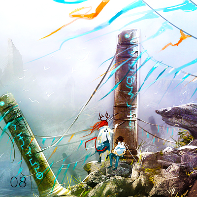

Interactive record. Each ring of grooves is a song. Press Enter to focus it and Escape to leave. Use the arrow keys to move between songs, and Enter to play one.
Tracklist
Running order
7 songs
Take it home
The inlay card
Print it, cut it out, and fold it into a cassette case. You can also copy the tracklist and rebuild the mix wherever you listen.
Side A
- Tell ‘em Sleigh Bells
- Is It Done J Mascis
- Icarus White Hinterland
- Crown Of Love (originally by The Arcade Fire) This Is Ivy League
Side B
- Under The Cover Of Darkness The Strokes
- Pumped Up Kicks Foster The People
- Here’s The Thing Girl Talk
Eighth
No.008
Eighth
February 2011
Monday Music Mix
A / B · 7 songs
Notes
From the original post
This week’s mix consists of new singles by The Strokes and the very excellent J Mascis (of Dinosaur Jr. fame), a foot-tapping mashup by Girl Talk, and This Is Ivy League’s balladesque take on Crown Of Love by the Grammy winning The Arcade Fire.
Special thanks: Zara for her excellent recommendation (Foster The People) :)
Archive